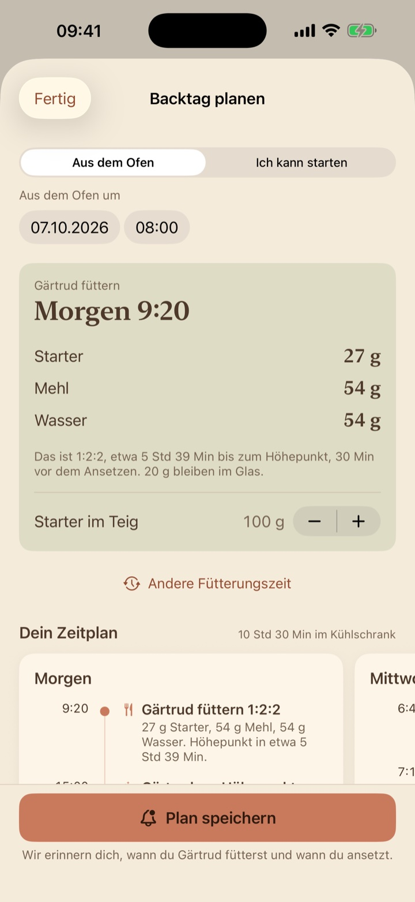
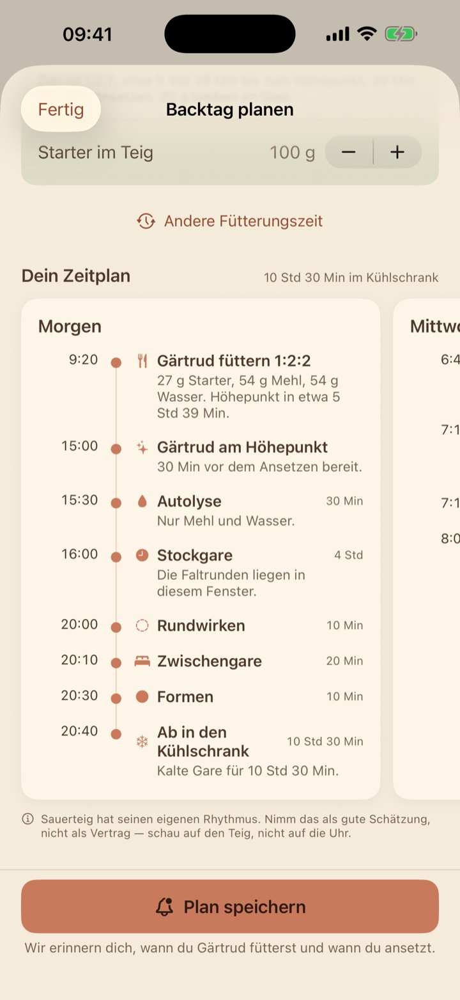
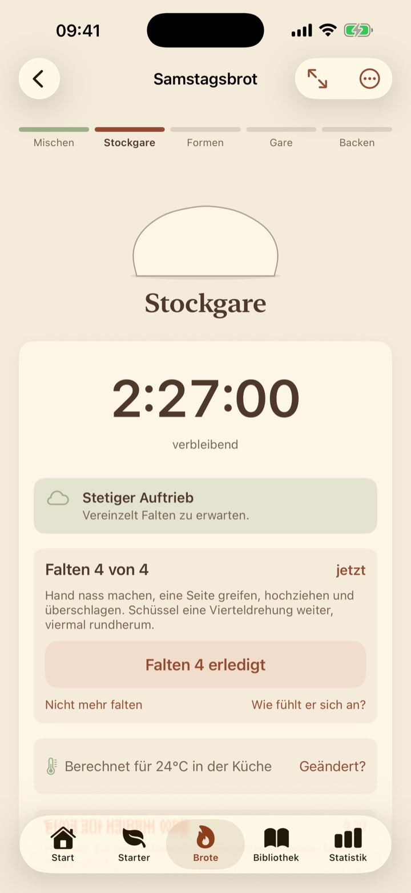
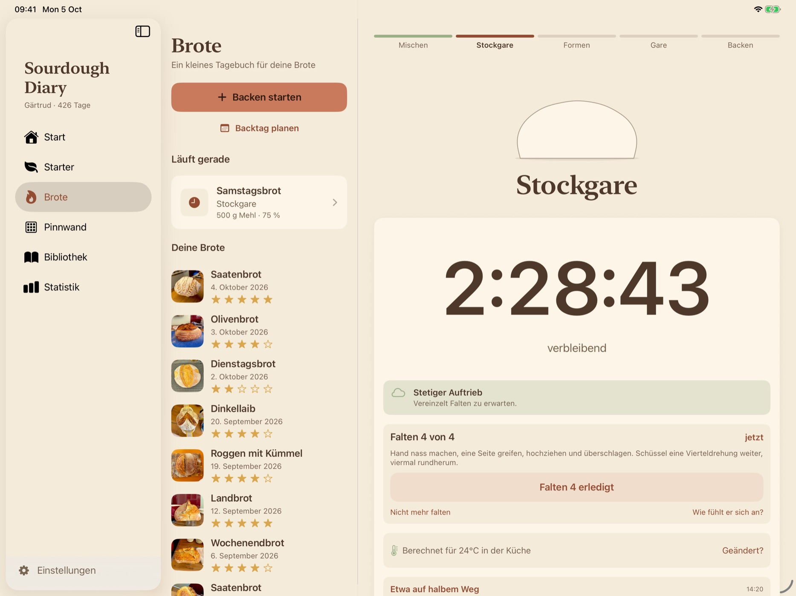
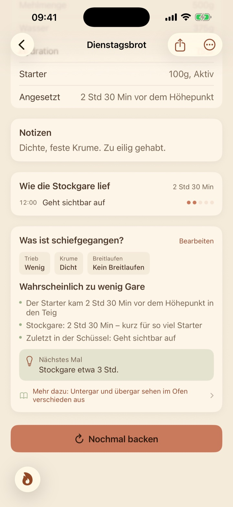

Vom Plan zum Brot
Sag, wann du Brot willst. Den Rest rechnet sie aus.

Ein Backtag, von Anfang bis Ende
Ein Beispielplan. Deiner wird aus deinem Starter und deiner Küche berechnet.
Starter füttern
27 g Starter, 54 g Mehl, 54 g Wasser.
Am Höhepunkt
Eine halbe Stunde vor dem Ansetzen bereit.
Mischen
Erst Mehl und Wasser, dann der Starter.
Stockgare
Vier Stunden auf einer Uhr, mit dem Falten mittendrin.
Formen
Rundwirken, Zwischengare, dann formen.
Ab in den Kühlschrank
Kalte Gare über Nacht.

Aus dem Ofen
Eingeschnitten, gebacken und aufgeschrieben.
Ein Plan, Tag für Tag
Wisch von heute zu morgen bis zu dem Morgen, an dem es aus dem Ofen kommt.
Der Plan rechnet vom Ofen rückwärts. Er sagt, wann du fütterst und was du dafür abwiegst, und erinnert dich an beides.

Jeder Schritt mit Timer
Eine Uhr pro Schritt. Sie läutet, wenn es so weit ist.
Die Stockgare ist eine Uhr, mit dem Falten mittendrin. Wird die Küche wärmer, wird die restliche Zeit neu berechnet.

Quer durch die Küche
Stell ein iPad auf die Arbeitsplatte, und der Backtag ist groß genug, um ihn von der Spüle aus zu lesen.

Mit mehligen Händen
Siri
Füttern eintragen oder fragen, wie lange es noch dauert, ohne das Handy anzufassen.
Widgets und Sperrbildschirm
Der laufende Schritt und seine Uhr, mit einer Taste für den nächsten.
Apple Watch
Das Glas am Handgelenk, und die Uhr fürs Backen daneben.
Was ist schiefgegangen?
Jedes Brot lehrt das nächste.
Jedes Brot wird gegen sein eigenes Protokoll gelesen, mit der wahrscheinlichen Ursache und einer Sache zum Ändern. Dann nochmal backen, die Änderung schon eingetragen.

Und die kleinen Dinge
- Das TeigwetterEine Vorhersage für die Stockgare: stetiger Auftrieb, vereinzelt Falten.
- Ein Fenster im OfenSchau dem Brot beim Aufgehen und Bräunen zu.
- Wie viel Wasser?Ein Leitfaden in Gramm für jedes Mehl.
- Mit oder ohne KühlschrankÜber Nacht in der Kälte gehen lassen, oder am selben Tag auf der Arbeitsplatte.
- Auf jedem GerätBeginn ein Brot am Handy, und es ist am iPad.
- Ein zweites MehlBrotmehl mit zwanzig Prozent Roggen, genau so notiert.
Dein Starter wartet
Laden im App Store Bald im App StoreDein Tagebuch synchronisiert über deine eigene iCloud, und du kannst eine Sicherung aufheben.